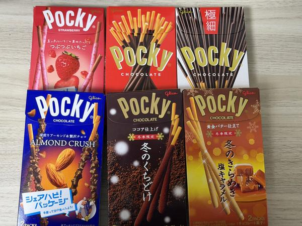
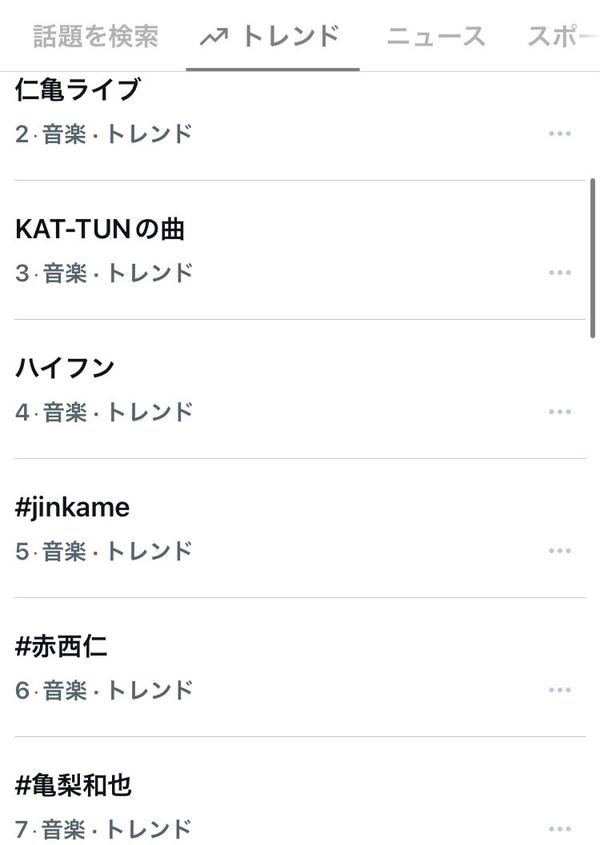
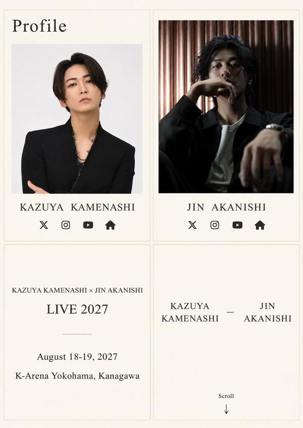
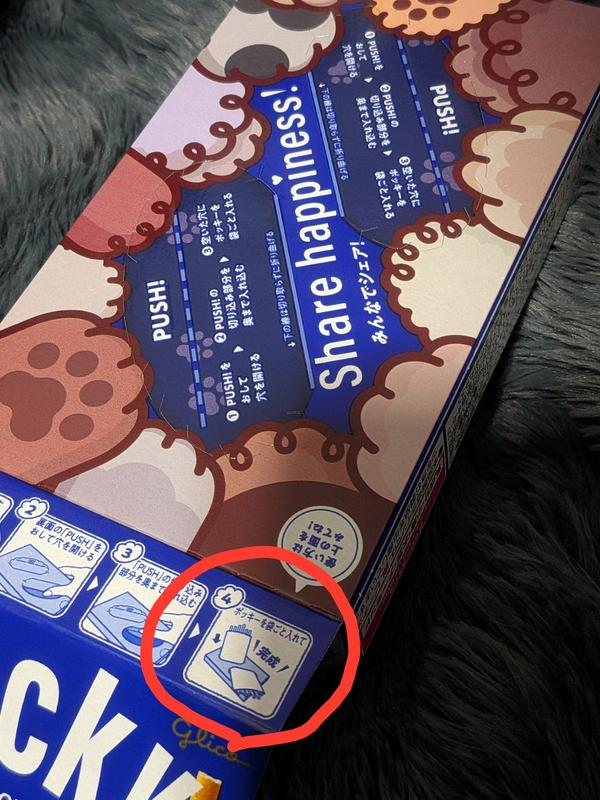
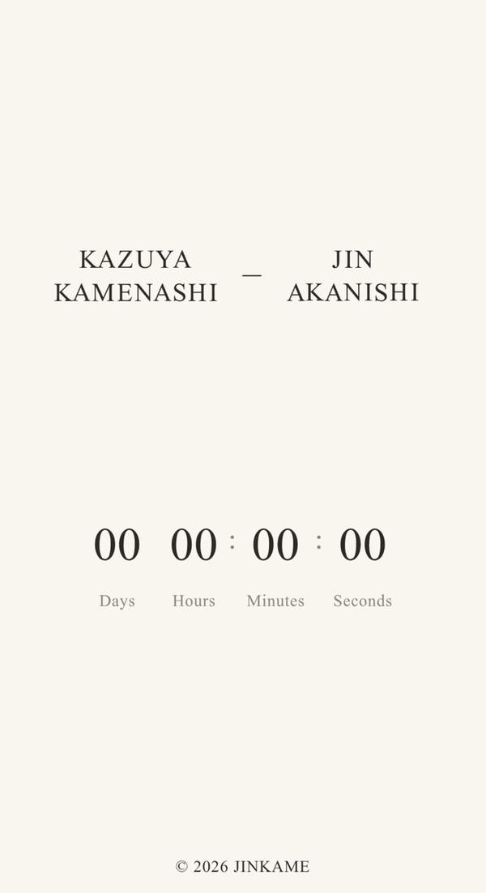

🇯🇵 日本の主要ニュース
🌍 世界の主要ニュース
ルビオ国務長官、APECでの米中ロ首脳会談は「実現可能」ルビオ国務長官は、APECにあわせた米国・中国・ロシアの3か国首脳会談について「実現可能だと思う」と述べ、詰めの調整を続けていることを明らかにしました。G7各国にはイランへの大規模戦闘は「必要ない」と伝えています。
出典：NHK
🤖 AIニュース
💻 PC・ガジェットニュース
🔥 Xのトレンド（日本）
ジャンルで絞らず上位20件を掲載。「未確認」はX上の投稿だけを根拠にしたもので、報道機関による裏付けはありません。

11月11日は江崎グリコが制定した「ポッキー＆プリッツの日」。数字の1が並ぶ形にちなみ、買ってきたポッキーの写真や好きな味の話、朝の挨拶の投稿が大量に流れています。
⚠ 未確認（X情報のみ）
元KAT-TUNの亀梨和也さんと赤西仁さんが、2027年8月18・19日にKアリーナ横浜で2人のスペシャルライブを開くと11日朝6時に発表しました。2人そろってのライブは18年ぶりで、ファンの歓喜と「倍率がすごそう」という声があふれています。
出典：音楽ナタリー／スポニチ
水曜日の朝の定番フレーズ「週の真ん中すいようび」。今季一番の冷え込みや11月11日の記念日の話題を添えた朝の挨拶投稿が集まっています。
⚠ 未確認（X情報のみ）
11月11日は、ベースギターの4本の弦を「1111」に見立てた「ベースの日」。ベーシストやバンド好きが愛用の楽器や演奏の思い出を投稿しています。
⚠ 未確認（X情報のみ）

仁亀ライブの発表を受け、「KAT-TUNの曲はやるのか」と期待する投稿が急増しています。以前テレビで「KAT-TUNの曲はマスト」と話していたとする声もあり、セットリストの予想で盛り上がっています（未確認）。
⚠ 未確認（X情報のみ）
放射冷却で11日朝は各地で冷え込み、「車のフロントガラスが凍っていた」という報告が相次いでいます。関東でも10度を下回る所があり、冬の到来を実感する声が多く出ています。
出典：NHK（冷え込みの報道）
亀梨さんと赤西さんが8日に公開したカウントダウンサイト「jinkame.com」にちなむハッシュタグです。カウントダウン終了と同時にライブ告知が表示され、速報や画面写真の投稿が広がりました。
出典：音楽ナタリー
KAT-TUNのファンの呼び名が「ハイフン」です。仁亀ライブのサイトで2人の名前が「－（ハイフン）」でつながれていることに気づいたファンが、「KAT-TUNへの思いでは」と感激する投稿をしています（未確認）。
⚠ 未確認（X情報のみ）
ブルボンのチョコブラウニーをめぐるSNS投稿キャンペーンのハッシュタグとみられます。「しっとり濃厚」「コーヒーやワインのお供に」など、好きな食べ方を添えた応募投稿が続いています（未確認）。
⚠ 未確認（X情報のみ）
仁亀ライブ発表を受け、赤西仁さんのファンが速報や喜びの投稿をしています。赤西さんは8日にXで「Hello」と添えてサイトを告知していました。
出典：スポニチ／モデルプレス
11月11日は、砂から体を出して並ぶ姿が「1111」に見えることから、すみだ水族館などが制定した「チンアナゴの日」。水族館の写真やイラストが多く投稿されています。
⚠ 未確認（X情報のみ）

亀梨和也さんが自身のSNSで「亀梨和也 × 赤西仁 スペシャルライブ開催決定！」と発表し、ファンの祝福が集まっています。チケットは2人のファンクラブ会員向けの先行受付が予定されています。
出典：スポニチ／音楽ナタリー
NHKで再放送中の2001年度の朝ドラ「ほんまもん」（主演・池脇千鶴さん）の実況です。今朝はヒロイン木葉のデート場面が話題で、本放送中の朝ドラ「ブラッサム」と見比べる投稿も目立ちます（未確認）。
⚠ 未確認（X情報のみ）
ポッキーの日にあわせて「ポッキー派？プリッツ派？」と問う投稿に、「最後までチョコたっぷりのトッポ派」と答える人が続出し、トレンド入りしました。
⚠ 未確認（X情報のみ）

ポッキーのキャッチコピー「シェアハピ」です。ポッキーの日にあわせ、友達や同僚とお菓子を分け合った写真や、箱がシェアしやすい仕様になっていたという投稿が集まっています。
⚠ 未確認（X情報のみ）
「週の真ん中すいようび」の朝の挨拶とともに、イラストや朝の景色の写真が多数投稿されています。
⚠ 未確認（X情報のみ）
仁亀ライブの英字表記のトレンドです。「21年前」の2人の映像を振り返る投稿や、「追加公演を」「ドームで」と求める声が広がっています。
出典：音楽ナタリー
11月11日は日本輸入チーズ普及協会などが制定した「チーズの日」。チーズナンなど好きなチーズ料理の写真が投稿されています。
⚠ 未確認（X情報のみ）
11月11日は「いい日、いい日」の語呂合わせで厚生労働省が定めた「介護の日」。自治体や団体が介護への理解を呼びかける投稿をしています。
⚠ 未確認（X情報のみ）

仁亀ライブのひらがな表記です。同じ話題が複数の表記でトレンド入りしていることに驚く投稿や、「来年8月まで絶対生きる」と意気込むファンの声が目立ちます。
⚠ 未確認（X情報のみ）
Grok Bot がまとめました。